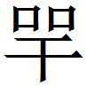
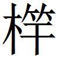
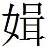
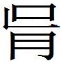

趙三
趙惠文王三十年
趙惠文王三十年，相都平君田單〔一〕 問趙奢曰：「吾非不說將軍之兵法也，所以不服者，獨將軍之用眾。用眾者，使民不得耕作，糧食輓賃〔二〕 不可給也。此坐而自破之道也，非單之所為也。單聞之，帝王之兵，所用者不過三萬，而天下服矣。今將軍必負十萬、二十萬之眾乃用之，此單之所不服也。」
〔一〕 鮑本 「都平」作「平都」，下同。按史 ，單無都平之稱。魏策 三言平都，今從之。又按，孝成元年，單將趙師攻燕，二年為相。蓋相平都而將之，實自惠文。至孝成，乃攻燕復相也。正曰：史·趙世家 ，惠文王三十三年卒，孝成王元年，田單將趙師攻燕及韓，二年，田單為相。此稱都平君，是仍齊相之稱。都平，即安平也，故大事記 俱作安平君。魏策·長平之役 ，平都君云云，不言是田單也。惠文三十年，正趙奢破秦軍閼與後一歲，單未至趙也。疑三十年下有缺文。
〔二〕 鮑本 賃，所稅於民者。
馬服曰〔一〕 ：「君非徒不達於兵也〔二〕 ，又不明其時勢〔三〕 。夫吳干之劍〔四〕 ，肉試則斷牛馬，金試則截盤匜〔五〕 ；薄之柱上而擊之〔六〕 ，則折為三，質〔七〕 之石上而擊之，則碎為百。今以三萬之眾而應強國之兵，是薄柱擊石之類也〔八〕 。且夫吳干之劍材，難〔九〕 夫毋〔一〇〕 脊之厚，而鋒不入；無脾〔十一〕 之薄，而刃不斷。兼有是兩〔一二〕 者，無釣

鐔蒙須〔一三〕 之便，操其刃而刺，則未入而手斷。君無十餘〔一四〕 、二十萬之眾，而為此釣咢鐔蒙須之便，而徒以三萬行於天下，君焉能乎？且古者，四海之內，分為萬國。城雖大，無過三百丈〔一五〕 者；人雖眾，無過三千家者。而以集〔一六〕 兵三萬，距此奚難哉！今取古之為萬國者，分以為戰國七，能〔一七〕 具數十萬之兵，曠日持久，數歲，即君之齊已〔一八〕 。齊以二十萬之眾攻荊，五年乃罷。趙以二十萬之眾攻中山，五年乃歸〔一九〕 。今者，齊、韓相方〔二〇〕 ，而國圍攻焉，〔二一〕 豈有敢曰，我其以三萬救是者乎哉？今千丈之城，萬家之邑相望也，而索〔二二〕 以三萬之眾，圍千丈之城，不存其一角〔二三〕 ，而野戰不足用也〔二四〕 ，君將以此何之？」都平君喟然太息曰：「單不至也〔二五〕 ！」〔一〕 鮑本 「曰」上有「君」字。補曰：馬服，注見秦策 。張華曰，趙奢家在邯鄲西山上，謂之馬服山。札记 丕烈案：馬服，即馬服君也。后有。
〔二〕 鮑本 兵，則吳干之喻。
〔三〕 鮑本 時勢，則萬國、七國之異。
〔四〕 姚本續 云：荀子 注引作「吳干將之劍」。鮑本 吳王使干將鑄之，故云。
〔五〕 鮑本 匜，盥器。補曰：荀子 作「劙盤盂」。注，銅器，引策 文。
〔六〕 鮑本 薄，猶迫。補曰：薄，音搏。
〔七〕 鮑本 質，以石為鑕。
〔八〕 鮑本 「類」作「謂」。補曰：言劍雖利，然薄之於柱，質之於石而擊之，則不敵於柱石之堅，必折且碎。一本，「之謂」作「之類」。荀子 注引「吳干將」。
〔九〕 鮑本 材，謂脊脾之類，不易得也。
〔一〇〕 鮑本 「毋」作「無」補曰：「無」通。札记 丕烈案：吳補亦未是也。下句乃以「無」為「毋」。「難」字屬此句讀，連上者非。
〔一一〕 鮑本 脾，近刃處。
〔一二〕 鮑本 「兩」作「二」。
〔一三〕 姚本 曾作「頃」，下同。鮑本 「釣」作「鉤」。「 」作「罕」，又改作「竿」。鉤，劍頭鐶。竿，與「

」同。集韻 ，柄也。鐔，珥鼻也。蒙須，疑為劍繩，猶蒯緱也。爾雅 ，「草有夫須」，蓋以草為繩。正曰：鉤，亦劍屬。一本作「 」，是，下同。「咢」與「鍔」同，刃鋒也。姚云，曾本「須」作「頃」，亦未詳。補曰：鐔，徐心反。札记 今本「釣」作「鉤」。〔一四〕 鮑本 正曰：恐即上文「萬」字。札记 丕烈案：吳說非是也，此不當改。
〔一五〕 姚本 集作「三丈」。
〔一六〕 鮑本 集，言平時團集，非烏合也。
〔一七〕 鮑本 「能」上補「不」字。
〔一八〕 鮑本 言以三萬拒數十萬，必敗亡也。齊嘗為燕昭所破，故云。正曰：「能具」云云，即下云齊以二十萬眾攻荊五年之事。
〔一九〕 鮑本 此言雖眾猶不亟得志，況三萬乎？
〔二〇〕 鮑本 方，猶比，猶敵。
〔二一〕 鮑本 兩國或圍或攻。
〔二二〕 鮑本 索，猶求。
〔二三〕 鮑本 言城大兵少，曾不處城之一角，豈能合圍？
〔二四〕 鮑本 既不能圍，亦不可戰。
〔二五〕 鮑本 至，猶及也，言慮不及此。彪謂：兵不期少多，商敵為數耳。單也以少擊眾，奇兵也。奢也以眾敵眾，正兵也。論兵者當以正為常，而用之則務出奇。奇不可論也。單也狃於即墨之勝，欲以奇為常而廢正，此其論所以屈也。補曰：兵不期少多，商敵為數，此論是矣。而有所未盡，以其論兵而不論將也。單之破燕，蓋乘眾之憤懈，而設奇駭之。奢之救閼與，曰道遠險狹，猶兩鼠鬥穴中，將勇者勝。其後卒以計敗秦。而長平之役，括以四十五萬之眾，而不免於白起。將善則能以少而勝，不善則雖多而亦敗爾。雖然，人知少之害而未知多之累。曹操以八十萬而敗于赤壁，將非不善也。故韓信之論高帝曰，「不過能將十萬」，而多多益辦，獨信能之。論兵者可以不知將哉？
趙使机郝之秦
趙使机郝〔一〕 之秦，請相魏冉。宋突〔二〕 謂机郝曰：「秦不聽，樓緩必怨公〔三〕 。公不若陰辭〔四〕 樓子曰：『請無急秦王。〔五〕 』秦王見趙之相魏冉之不急也〔六〕 ，且不聽公言也〔七〕 ，是事而不成〔八〕 ，魏冉固德公矣。」〔九〕
〔一〕 鮑本 「机郝」作「仇赫」。下同。史 作「仇液」。補曰：「仇」訛。札记 丕烈案：東周策 有「仇赫之相宋」，鮑所據也。此文史記 作「仇液」。索隱 曰，戰國策 作「朹郝」。蓋一人而記 別也。考後策有「齊人戎郭、宋突謂仇郝曰」，又有「令仇郝相宋」，即此。「机」者，「朹」之別體，於「仇」為同字。「郝」、「赫」、「液」，聲之轉也。
〔二〕 鮑本 齊人，郝客。正曰：無據。史 作「宋公」，索隱 引策 云「宋交」。
〔三〕 鮑本 秦時已相緩。
〔四〕 鮑本 辭，告之也。
〔五〕 鮑本 昭王。言為緩故，請之不力。
〔六〕 鮑本 無「也」字。
〔七〕 鮑本 公，謂郝。
〔八〕 鮑本 「成」下補「以德樓子事成」六字。以史補此六字。補曰：史此下有「以德樓子事成」六字，恐策有缺文。
〔九〕 鮑本 穰侯傳 有，云秦昭七年。此二十六年。補曰：史 ，趙人樓緩來相秦，數不利，乃使仇液云云。於是仇液從之，而秦果免樓緩，而魏冉相。
齊破燕趙欲存之
齊破燕〔一〕 ，趙欲存之。樂毅謂趙王曰：「今無約而攻齊，齊必讎趙〔二〕 。不如請以河東易燕地於齊〔三〕 。趙有河北，齊有河東〔四〕 ，燕、趙必不爭矣。是二國親也。以河東之地強齊〔五〕 ，以燕以〔六〕 趙輔之〔七〕 ，天下憎之〔八〕 ，必皆事王以伐齊。是因天下以破齊也。」王曰：「善。」乃以河東易齊，楚、魏憎之，令淖滑、惠施之趙，請伐齊而存燕。〔九〕
〔一〕 鮑本 之、噲之亂。燕七年，此十二年。
〔二〕 鮑本 不約與國而獨攻齊，故齊怨。若有與同攻，則怨有所分矣。
〔三〕 鮑本 齊破燕，所謂地近趙，趙以河東易之。
〔四〕 鮑本 此二非郡。
〔五〕 鮑本 言齊得河東則益強。
〔六〕 姚本 劉去「以」字。
〔七〕 鮑本 與之易地，是助之也。
〔八〕 鮑本 害其強。
〔九〕 鮑本 補曰：大事記 ，按樂毅傳 ，毅賢好兵，趙人舉之。及武靈王有沙丘之亂，乃去趙適魏。毅嘗事趙也。又云，趙納公子職于燕，世家 不書其立，蓋燕人不受也。
秦攻趙藺離石祁拔
秦攻趙，藺、離石、祁拔。趙以公子郚〔一〕 為質於秦，而請內焦〔二〕 、黎〔三〕 、牛狐之城〔四〕 ，以易藺、離石、祁於趙〔五〕 。趙背秦，不予焦、黎、牛狐。秦王〔六〕 怒，令公子繒請地。趙王乃令鄭朱對曰：「夫藺、離石、祁之地，曠遠於趙，而近於大國。有先王之明與先臣之力，故能有之。今寡人不逮〔七〕 ，其社稷之不能恤，安能收恤藺、離石、祁乎？寡人有不令之臣，實為此事也，非寡人之所敢知。」〔八〕 卒倍秦。
〔一〕 鮑本 補曰：音吾。
〔二〕 姚本 一作「應」。鮑本 弘農郡有焦城。正曰：大事記 據此。愚疑非此地。
〔三〕 鮑本 東郡有黎，即黎陽。
〔四〕 鮑本 地缺。
〔五〕 鮑本 「趙」作「秦」。札记 今本「趙」作「秦」，乃誤涉鮑也。
〔六〕 鮑本 昭。
〔七〕 鮑本 不及先王。
〔八〕 鮑本 補曰：鄭朱之對，辭氣類左氏 。
秦王大怒，令衛胡易〔一〕 伐趙，攻閼與〔二〕 。趙奢將救之。〔三〕 魏令公子咎以銳師居安邑，以挾秦〔四〕 。秦敗於閼與，反攻魏幾〔五〕 ，廉頗救幾，大敗秦師。〔六〕
〔一〕 鮑本 史 無「易」字。補曰：秦紀 ，「中更胡傷」，說見後。札记 丕烈案：「易」當作「昜」，「昜」「傷」同字。
〔二〕 鮑本 後志 ，上黨涅有閼與。補曰：大事記 ，潞州絧鞮縣西北，閼與震。閼，阿葛切。與，音預。
〔三〕 鮑本 此二十九年，破趙閼與下。
〔四〕 鮑本 挾，牽制之。正曰：夾持之。
〔五〕 鮑本 魏將。正曰：幾，邑名。正義 云，或屬齊，或屬魏，當在相、潞之間。幾音機，一音祈。
〔六〕 鮑本 補曰：按西周策 ，蘇厲謂周君曰，敗韓、魏，殺犀武，攻趙，取藺、離石、祁者，皆白起。則此舉乃起將也。按顯王四十一年，秦敗趙，殺趙相，取離石。赧王二年，秦拔趙藺，虜趙莊藺引。而此言取二城，在伊闕戰後，史 載於赧王三十四年。豈戰國地里不常，後復屬趙，而今為秦所拔歟？赧之三十四年，當惠文十八年。前一年秦拔我兩城，是年秦拔我石城。豈即此三邑，而石城即離石邪？末言戰閼與攻幾事，皆因此。按史 ，趙奢攻秦閼與，在惠文二十九年，廉頗攻幾，在惠文二十三年。今策戰閼與而後攻幾，前後不同。大事記 謂，幾本屬魏，廉頗取之，自是遂屬趙。秦師既為趙奢所敗，師還，因擊幾，故下文稱救幾也。又按，秦紀 ，中更胡傷攻趙閼與，在趙奢破秦次年。年表 ，秦擊我閼與，城不拔，是再攻閼與也。與策 亦舛。大事記 從史 書之而不辨，當詳之。
富丁欲以趙合齊魏
富丁〔一〕 欲以趙合齊、魏，樓緩欲以趙合秦、楚。富丁恐主父之聽樓緩而合秦、楚也。
〔一〕 鮑本 趙人。
司馬淺〔一〕 為富丁謂主父曰：「不如以順齊〔二〕 。今我不順齊伐秦，秦、楚必合而攻韓、魏〔三〕 。韓、魏告急於齊，齊不欲伐秦〔四〕 ，必以趙為辭〔五〕 ，則〔六〕 伐秦者趙也，韓、魏必怨趙。齊之兵不西〔七〕 ，韓必聽秦違齊〔八〕 。違齊而親〔九〕 ，兵必歸於趙矣。今我順而齊不西，韓、魏必絕齊，絕齊則皆事我。且我順齊，齊無而西〔一〇〕 。日者〔一一〕 ，樓緩坐魏〔一二〕 三月，不能散齊、魏之交〔一三〕 。今我順而齊、魏果西，是罷〔一四〕 齊敝秦也，趙必為天下重國。」主父曰：「我與三國攻秦〔一五〕 ，是俱敝也」。曰：「不然。我約三國而告之秦〔一六〕 ，以未構〔一七〕 中山也〔一八〕 。三國欲伐秦之果也，必聽我，欲和我〔一九〕 。中山聽之，是我以王因〔二〇〕 饒中山而取地也〔二一〕 。中山不聽，三國必絕之，是中山孤也。三國不能和我，雖少出兵可也。我分兵而孤樂〔二二〕 中山，中山必亡〔二三〕 。我已亡中山，而以餘兵與三國攻秦，是我一舉而兩取地於秦、中山也。」〔二四〕
〔一〕 鮑本 趙人。
〔二〕 鮑本 齊本欲伐秦，今順之。
〔三〕 鮑本 無齊之難，因得取其鄰也。
〔四〕 鮑本 上言順齊伐秦，此又言齊不欲伐者，前時秦、楚未合，今合故也。
〔五〕 鮑本 以趙不順齊伐秦告二國。
〔六〕 鮑本 「則」下補「不」字。補曰：「則」下宜有「不」字。
〔七〕 鮑本 不伐秦。
〔八〕 鮑本 畏秦故。
〔九〕 鮑本 秦親韓。
〔一〇〕 鮑本 「而」作「不」。補曰：字訛，或上文有誤。札记 今本「而」作「不」，乃誤涉鮑也。
〔一一〕 鮑本 言昔日。
〔一二〕 鮑本 時欲離齊、魏。坐，言有所待。
〔一三〕 鮑本 言二國本親，宜與之伐秦。
〔一四〕 鮑本 「罷」，「疲」同。
〔一五〕 鮑本 韓、魏、齊為三。
〔一六〕 鮑本 衍「秦」字。補曰：恐衍。
〔一七〕 鮑本 「構」作「講」。元作御名。
〔一八〕 鮑本 此言可以少出兵也。此二十七年，趙破中山，未滅也，趙宜自備。
〔一九〕 鮑本 使趙與中山講。
〔二〇〕 鮑本 「王因」作「三國」。補曰：當作「三國」，字訛。
〔二一〕 鮑本 饒，猶益也。以三國欲和我，故益得取地於中山。
〔二二〕 鮑本 衍「樂」字。補曰：字誤，或衍。
〔二三〕 鮑本 「亡」作「之」。之，猶去。補曰：一本「之」作「亡」，是。
〔二四〕 鮑本 補曰：中山，說見齊策 。此策 當在上章之前，多誤字。「為富」之「為」，去聲。
魏因富丁且合於秦〔校一〕
〔校一〕 此篇姚本與富丁欲以趙合齊魏 連篇，鮑本另列一篇，據文義，從鮑本。
魏因富丁且合於秦〔一〕 ，趙恐，請效地於魏而聽薛公〔二〕 。教子欬〔三〕 謂李兌曰：「趙畏橫之合也〔四〕 ，故欲效地於魏而聽薛公。公不如令主父以地資周最，而請相之於魏。周最以天下辱〔五〕 秦者也，今相魏，魏、秦必虛矣〔六〕 。齊、魏雖勁，無秦不能傷趙。魏王〔七〕 聽，是輕齊也〔八〕 。秦、魏雖勁，無齊不能得趙。此利於趙而便於周最也。」
〔一〕 鮑本 丁本欲以趙合齊、魏，今魏欲因以合秦，趙不聽故。
〔二〕 鮑本 文，時合齊、魏。
〔三〕 鮑本 或者「教之欬」，趙人。正曰：無考。
〔四〕 鮑本 合秦，故言橫。
〔五〕 鮑本 「辱」作「厚」。札记 丕烈案：「厚」字誤。
〔六〕 鮑本 厚秦而舍之相魏，秦必惡之，故二國不合。虛，言其不合也。
〔七〕 鮑本 哀。正曰：襄。
〔八〕 鮑本 齊亦重最故。正曰：最於齊厚，語見周策 。魏用齊所厚以為相，是輕齊也。
魏使人因平原君請從於趙
魏使人因平原君請從於趙。三言之，趙王不聽。出遇虞卿曰：「為〔一〕 入必語從。」虞卿入，王曰：「今者平原君為魏請從，寡人不聽。其於子何如？」虞卿曰：「魏過矣。」王曰：「然，故寡人不聽。」虞卿曰：「王亦過矣。」王曰：「何也？」曰：「凡強弱之舉事，強受其利，弱受其害。今魏求從，而王不聽，是魏求害，而王辭利也。臣故曰，魏過，王亦過矣〔二〕 。」
〔一〕 鮑本 為，為我。
〔二〕 鮑本 「過」下無「矣」字。虞卿傳有。彪謂：虞卿之言，為皆不倍道，非反覆揣摩為人緩頰人也。從之利害正爾。雖微平原之說，卿亦必云爾。終之趙利魏亦利矣。惟不能必趙聽己，從而先有輕發，則是有受害之形也。
平原君請馮忌
平原君請〔一〕 馮忌〔二〕 曰：「吾欲北伐上黨，出兵攻燕，何如？」馮忌對曰：「不可。夫以秦將武安君公孫起〔三〕 乘七勝之威〔四〕 ，而與馬服之子戰於長平之下，大敗趙師，因以其餘兵，圍邯鄲之城。趙以亡敗之餘眾，收破軍之敝守〔五〕 ，而秦罷於邯鄲之下，趙守而不可拔者〔六〕 ，以〔七〕 攻難而守者易也。今趙非有七克之威也，而燕非有長平之禍也。今七敗之禍未復，而欲以罷〔八〕 趙攻強燕，是使弱趙為強秦之所以攻，而使強燕為弱趙之所以守。而強秦以休兵〔九〕 承趙之敝，此乃強吳之所以亡，而弱越之所以霸。故臣未見燕之可攻也。」平原君曰：「善哉！」
〔一〕 姚本 劉本，「請」作「謂」。鮑本 「請」作「謂」。
〔二〕 鮑本 後稱「外臣」，知非趙人。
〔三〕 鮑本 補曰：即白起，前有。
〔四〕 鮑本 勝趙。
〔五〕 鮑本 敝守，守邯鄲。
〔六〕 鮑本 「者」上有「然」字。言所以然。札记 丕烈案：「然者」，上有。
〔七〕 鮑本 無「以」字。
〔八〕 鮑本 罷，音疲。
〔九〕 鮑本 休息之兵。
平原君謂平陽君
平原君謂平陽君曰：「公子牟〔一〕 游於秦，且東〔二〕 ，而辭應侯〔三〕 。應侯曰：『公子將行矣，獨無以教之乎？』曰：『且微君之命命之也，臣固且有效於君。夫貴不與富期，而富至；富不與粱肉期，而粱肉至；粱肉不與驕奢期，而驕奢至；驕奢不與死亡期，而死亡至。累世以前，坐此者多矣。』應侯曰：『公子之所以教之者厚矣。』僕〔四〕 得聞此，不忘於心。願君之亦勿忘也。」平陽君曰：「敬諾。」〔五〕
〔一〕 鮑本 魏公子。即下魏牟。若莊子 所稱中山者，不與應侯同時。正曰：按莊子 ，「中山公子牟謂瞻子」下云，「魏牟，萬乘之公子也」。是中山公子牟，即魏牟，非二人也。又云「公孫龍問於魏牟」。公孫龍，平原君之門，正應侯同時也。史 ，赧王四十九年，范睢為相，封應侯。赧王之元年，之、噲死，莊子 書及稱之、噲。則魏牟之上及莊子 ，下及應侯，無疑。
〔二〕 鮑本 東歸魏。
〔三〕 鮑本 正曰：說苑 載此，以為公子牟謂穰侯。
〔四〕 鮑本 僕，平原自稱。
〔五〕 鮑本 彪謂：此言者，富貴之金石也。有能書諸紳，銘之几杖，勒之盤盂，則何亡國敗家之有？補曰：魏牟嘗言身居江海，心在魏闕。瞻子告以重生則利輕，則曰雖知而未能自勝，於是又得夫重傷之說焉。故莊子 許其雖未至道，可謂有其意，其人可知矣。所以告范睢者，亦以富貴驕奢警之。是時，睢方擅秦權，廣身封，快意恩讎，沉於富貴。公子特自其所急者言之，其微旨固非睢所得聞也。正曰：此五章平原君，皆當與平原君不受封諸章相次，舊策 所載是矣。
秦攻趙於長平
秦攻趙於長平，大破之，引兵而歸。因使人索六城於趙而講〔一〕 。趙計未定。樓緩新從秦來，趙王與樓緩計之曰：「與秦城何如？不與何如？」樓緩辭讓曰：「此非人〔二〕 臣之所能知也。」王曰：「雖然，試言公之私。」樓緩曰：「王亦聞夫公甫文伯母乎？公甫文伯官於魯，病死。婦人為之自殺於房中者二八。其母聞之，不肯哭也。相室曰：『焉有子死而不哭者乎？』其母曰：『孔子，賢人也，逐於魯，是人〔三〕 不隨。今死，而婦人為死者十六人〔四〕 。若是者，其於長者薄，而於婦人厚？』故從母言之，之〔五〕 為賢母也；從婦言之，必不免為妒婦也。故其言一也，言者異，則人心變矣。今臣新從秦來，而言勿與，則非計也；言與之，則恐王以臣之為秦也。故不敢對。使臣得為王計之，不如予之。」王曰：「諾。」
〔一〕 鮑本 「講」作「媾」，又改作「講」。史 書此事在邯鄲圍解後。按邯鄲之圍，非秦德趙而解也，趙賴魏之力爾。何事朝秦而講以六城？此策 以長平破，懼而賂之，是也。
〔二〕 鮑本 衍「人」字。札记 丕烈案：史記 、新序 無。
〔三〕 鮑本 稱是人，不子之也。
〔四〕 鮑本 補曰：正義 云，相室、傅姆之類。愚按，檀弓文伯之喪，敬姜據其床而不哭曰云云，與樓緩之言相出入。辯士之言或過。史 及新序 並作「二人」，是。上文「八」字，乃「人」字之訛。札记 丕烈案：吳說非也。史記 、新序 「二人」，皆「二八」之訛。
〔五〕 鮑本 「之」字不重。札记 丕烈案：史記 作「故從母言之，是為賢母；從妻言之，是必不免為「妒妻」。新序 有兩「是」字，無兩「之」字。此當「必」上脫一「之」字。
虞卿聞之，入見王，王以樓緩言告之。虞卿曰：「此飾說也〔一〕 。」秦既解邯鄲之圍，而趙王入朝，使趙郝〔二〕 約事於秦，割六縣而講〔三〕 。王曰：「何謂也？」虞卿曰：「秦之攻趙也，倦而歸乎？王以〔四〕 其力尚能進，愛王而不攻乎？」王曰：「秦之攻我也〔五〕 ，不遺餘力矣，必以倦而歸也。」虞卿曰：「秦以其力攻其所不能取，倦而歸。王又以其力之所不能攻以資之，是助秦自攻也。來年秦復攻王，王無以救矣。」
〔一〕 鮑本 猶飾辯。
〔二〕 姚本 音釋，作「赦」。
〔三〕 鮑本 原注衍「秦既解邯鄲之圍而趙王入朝使趙郝約事於秦割六縣而講」二十四字。補曰：此二十四字脫簡誤在此，史 以為章首者。此策 實非邯鄲圍解後事也。札记 丕烈案：史記 以此篇列後秦趙戰長平趙不勝 篇之下，首有此二十四字。此下至「其勢必無趙矣」，「樓緩」盡為「趙郝」，列於前；下接「趙計未定」，至「此飾說也」；下接「王必無與」，至末。新序 亦如此。考此，乃策 文先後，本不與史記 同，或就此間標史記 文而誤入正文，遂致與「趙計未定」上文複出。吳氏以為脫簡者，非是。當刪此二十四字。其餘次序仍策 文之舊。
〔四〕 姚本 錢、劉去「王以」字，添「亡」字。
〔五〕 札记 今本「攻」誤「伐」。
王又以虞卿之言告樓緩〔一〕 。樓緩曰：「虞卿能盡知秦力之所至乎〔二〕 ？誠知秦力之不至〔三〕 ，此彈丸之地，猶不予也，令秦來年復攻王，得無割其內而媾乎？」王曰：「誠聽子割矣，子能必來年秦之不復攻我乎？」樓緩對曰：「此非臣之所敢任也。昔者三晉之交於秦，相善也。今秦釋韓、魏而獨攻王，王之所以事秦必不如韓、魏也。今臣為足下解負親之攻〔四〕 ，啟關通敝〔五〕 ，齊交韓、魏〔六〕 。至來年而王獨不取於秦〔七〕 ，王之所以事秦者，必在韓、魏之後也。此非臣之所敢任也。」
〔一〕 鮑本 史 云樓緩事。正曰：史 云趙郝，新序 同，止「其勢必無趙矣」。札记 丕烈案：此策 文與史記 不同，策 無趙郝。新序 出史記 ，說見上。
〔二〕 鮑本 至，猶及也。虞卿言秦力倦而歸，謂秦力所及止是耳。秦力豈止是而已乎？
〔三〕 鮑本 「誠」下補「不」字，「之」下「不」作「所」。札记 今本「誠」下有「不」字，「之」下有「所」字，乃誤涉鮑也。丕烈案：史記 、新序 作「誠知秦力之所不至」。
〔四〕 鮑本 趙嘗親秦而復負之，故秦攻之，今為媾所以解也。
〔五〕 鮑本 「敝」作「弊」。正曰：當作「幣」。札记 今本「敝」作「幣」，乃誤涉鮑也。丕烈案：新序 作「幣」，史記 作「弊」。
〔六〕 鮑本 使其交秦與韓、魏等。
〔七〕 鮑本 不為秦所取。
王以樓緩之言告。虞卿曰〔一〕 ：「樓緩言不媾，來年秦復攻王，得無更割其內而媾。今媾，樓緩又不能必秦之不復攻也，雖割何益？來年復攻，又割其力之所不能取而媾也，此自盡之術也。不如無媾。秦雖善攻，不能取六城；趙雖不能守，而不至失六城〔二〕 。秦倦而歸，兵必罷〔三〕 。我以五城〔四〕 收天下以攻罷秦，是我失之於天下，而取償於秦也。吾國尚利，孰與坐而割地，自弱以強秦？今樓緩曰：『秦善韓、魏而攻趙者，必王之事秦不如韓、魏也。』是使王歲以六城事秦也，即坐而地盡矣。來年秦復求割地，王將予之乎？不與，則是棄前貴〔五〕 而挑秦禍也〔六〕 ；與之，則無地而給之。語曰：『強者善攻，而弱者不能自守。』今坐而聽秦，秦兵不敝而多得地，是強秦而弱趙也。以益愈〔七〕 強之秦，而割愈弱之趙，其計固不止矣〔八〕 。且秦虎狼之國也，無禮義之心。其求無已，而王之地有盡。以有盡之地，給無已之求，其勢必無趙矣。故曰：此飾說〔九〕 也。王必勿與。」王曰：「諾。」
〔一〕 鮑本 「虞卿」下補「虞卿」二字。補曰：史此下復有「虞卿」二字。札记 丕烈案：新序 有。
〔二〕 鮑本 上「媾」皆作「講」，「而」作「亦」。札记 丕烈案：史記 作「終不失」，新序 作「亦不失」。
〔三〕 鮑本 並音疲。
〔四〕 鮑本 「五」作「六」。下同。正曰：此五城，與後「五城賂齊」、「得王五城」之「五」，且當從本文。札记 丕烈案：史記 作「六城」，新序 作「五縣」。考此，當策 文作「城」，史記 作「縣」，新序 出史記 。今本史記 「城」「縣」錯出。新序 後二處亦作「六城」。皆有誤。
〔五〕 鮑本 「貴」作「資」。補曰：恐作「資」。史 作「功」。札记 今本「貴」作「資」，乃誤涉鮑也。丕烈案：新序 作「功」。
〔六〕 鮑本 史 注「挑戰」為「致師」，則此言禍自我致也。
〔七〕 鮑本 衍「愈」字。正曰：新序 同，史 作「益強」，然有「愈」字亦通。益，謂增益之也。
〔八〕 鮑本 言割不止。
〔九〕 鮑本 補曰：按此「飾說」二字，與前相應，則文有亂脫無疑。札记 丕烈案：說見上。
樓緩聞之，入見於王，王又以虞卿言告之。樓緩曰：「不然，虞卿得其一，未知其二也。夫秦、趙構難，而天下皆說，何也？曰『我將因強而乘〔一〕 弱』。今趙兵困於秦，天下之賀戰者〔二〕 ，則必盡〔三〕 在於秦矣。故不若亟割地求和，以疑天下，慰秦心。不然，天下將因秦之怒，秦〔四〕 趙之敝而瓜分之〔五〕 。趙且亡，何秦之圖？王以此斷之，勿復計也。」
〔一〕 鮑本 乘，猶陵。
〔二〕 鮑本 「者」上補「勝」字。正曰：史 有「勝」字。札记 丕烈案：新序 有。
〔三〕 鮑本 無「盡」字。札记 丕烈案：史記 、新序 有。
〔四〕 姚本 一作「乘」。鮑本 「秦」作「乘」。
〔五〕 鮑本 分其地如破瓜然。
虞卿聞之，又入見王曰：「危矣，樓子之為秦也〔一〕 ！夫趙兵困於秦，又割地為和，是愈疑天下，而何慰秦心哉？是不亦大示天下弱乎？且臣曰勿予者，非固勿予而已也。秦索六城於王，王以五城賂齊。齊，秦之深讎也〔二〕 ，得王五城，并力而西擊秦也〔三〕 ，齊之聽王，不待辭之畢也。是王失於齊而取償於秦〔四〕 ，一舉結三國之親〔五〕 ，而與秦易道也。」趙王曰：「善。」因發虞卿東見齊王〔六〕 ，與之謀秦。
〔一〕 鮑本 為秦計深，而趙勢危。
〔二〕 鮑本 嘗爭為帝。正曰：不特此。
〔三〕 姚本 劉本去「也」字。
〔四〕 姚本 孫本抹去此十字。
〔五〕 鮑本 韓、魏本趙與國，與齊為三。
〔六〕 鮑本 王建。
虞卿未反，秦之使者已在趙矣。樓緩聞之，逃去。〔一〕
〔一〕 鮑本 虞卿傳有，次第不同。先云「秦既解邯鄲」，與今所衍二十四字同。次「虞卿謂趙王曰，秦之攻王也倦而歸乎」止「勢必無趙矣」。次「趙王計未定，樓緩從秦來」止「此飾說也」。次「王必勿與，樓緩聞之」止「緩聞之逃去」。彪謂：虞卿可謂見善明者矣。當趙以四十萬覆於長平之下，凡在趙庭之臣，孰不魄奪氣喪，顧講秦以偷須臾之寧？卿獨為之延慮卻顧，折樓緩之口，挫強秦之心，反使秦人先趙而講。於此亦足以見從者，天下之勢。七國辯士，策 必中，計必得，而不失其正，唯卿與陳軫有焉。賢矣哉！正曰：大事記 引蘇氏云，虞卿終始事趙，專持從說，非說客也。鮑以卿與陳軫並稱，軫料事明切，不下於卿，其勸懷王賂秦而取償於齊，意亦類此。他雖辯給可善，而言稍浮。至其往來秦、楚，爭寵張儀，徼貴犀首，未離說客之習也！豈卿比哉？
秦攻趙平原君使人請救於魏
秦攻趙，平原君使人請救於魏。信陵君發兵至邯鄲城下，秦兵罷。虞卿為平原君請益地，謂趙王曰：「夫不鬥一卒，不頓〔一〕 一戟，而解二國患者，平原君之力也〔二〕 。用人之力，而忘人之功，不可。」趙王曰：「善。」將益之地。公孫龍〔三〕 聞之〔四〕 ，見平原君曰：「君無覆軍殺將之功〔五〕 ，而封以東武城。趙國豪傑之士，多在君之右〔六〕 ，而君為相國者以親故〔七〕 。夫君封以東武城不讓無功〔八〕 ，佩趙國相印不辭無能，一解國患，欲求益地，是親戚受封，而國人計功也〔九〕 。為君計者，不如勿受便。」平原君曰：「謹受令。」乃不受封。〔一〇〕
〔一〕 鮑本 頓劍之頓。正曰：頓，義見秦策 。
〔二〕 鮑本 無「也」字。補曰：一本有「也」字。
〔三〕 鮑本 趙人，著守白論 ，莊子 稱之。距是遠甚，豈同姓名如公孫弘者乎？正曰：莊子 稱公孫龍之學「合同異，離堅白」。而史·平原傳 ，稱公孫龍善為堅白同異之辨。荀卿傳末以為趙人。又見列子 等書，同此人也。史 稱莊子 與梁惠、齊宣同時，楚威王欲以為相。威王元年，當顯王三十年，故大事記 以楚相之事附見。下至赧王十七年，趙勝封平原君，則周距平原未遠也。莊子 書稱之、噲。之、噲事當宣王末年，赧王元年也。下至魏破秦軍邯鄲時，以為赧王五十八年。則周之稱公孫龍，龍之在平原君門，皆相及也。惟以為仲尼弟子公孫龍者，則誤。蓋相去遠爾。
〔四〕 姚本 劉添「聞」字。鮑本 原無「聞」字，補「聞」字。補曰：史 有。
〔五〕 鮑本 言初封時以公子耳。
〔六〕 鮑本 右者，人道所尊。補曰：秦、漢以前，用右為上，如云「位在廉頗右」。
〔七〕 鮑本 「親」下補「也」字。正曰：「故」句。史 作「親戚故也」。
〔八〕 鮑本 不以無功辭之。
〔九〕 鮑本 國人受封，必計其功，與平原異。補曰：勝本無功，向之受封也，已不當得，今又欲益地。是在親戚，則無功受封，國人則計功乃受賞，輕重不倫也。漢光武封陰識，識引此語。
〔一〇〕 鮑本 彪謂：平原失計於馮亭，以挑秦禍，幾喪趙國之半，馴致邯鄲之圍，何功之足論哉？然因人成事，亦有桑榆之收，不可忘也。虞卿之請，帝王懋賞之舉；公孫龍之辭，明哲讓功之誼。皆君子之善言也。正曰：趙勝功不贖罪，虞卿此為失言。
秦趙戰於長平
秦、趙戰於長平，趙不勝〔一〕 ，亡一都尉〔二〕 。趙王召樓昌與虞卿曰：「軍戰不勝，尉復死〔三〕 ，寡人使卷甲而趍之〔四〕 ，何如？」樓昌曰：「無益也，不如發重使而為媾〔五〕 。」虞卿曰：「夫言媾者，以為不媾者軍必破，而制媾者在秦〔六〕 。且王之論秦也，欲破王之軍乎？其不邪？」王曰：「秦不遺餘力矣，必且破趙軍。」虞卿曰：「王聊聽臣，發使出重寶以附楚、魏。楚、魏欲得王之重寶，必入吾使。趙使入楚、魏，秦必疑天下合從也，且必恐。如此，則媾乃可為也。」
〔一〕 鮑本 無「不勝」二字。札记 丕烈案：史記 、新序 有。
〔二〕 鮑本 軍尉也。
〔三〕 鮑本 「復」作「係」。係，尉名。正曰：史 同。札记 新序 作「係」。徐廣注史記 云，「復」一作「係」。
〔四〕 鮑本 「趍」作「趨」。襲之也。
〔五〕 鮑本 「媾」作「講」。從女從冓，求和也，與「講」無異義。而此書兩字互用。今以御名，並作「講」。札记 丕烈案：史記 作「媾」，新序 作「構」。
〔六〕 鮑本 制，言聽否由之。
趙王不聽，與〔一〕 平陽君為媾，發鄭朱入秦，秦內之。趙王召虞卿曰：「寡人使平陽君媾秦，秦已內鄭朱矣，子以為奚如？」虞卿曰：「王必不得媾，軍必破矣，天下之賀戰勝者皆在秦矣。鄭朱，趙之貴人也，而入於秦，秦王〔二〕 與應侯必顯重以示天下。楚、魏以趙為媾，必不救王。秦知〔三〕 天下不救王，則媾不可得成也〔四〕 。」趙卒不得媾，軍果大敗。王入秦，秦留趙王而后許之媾。〔五〕
〔一〕 鮑本 與，從之也。
〔二〕 鮑本 昭。
〔三〕 姚本 一本去「秦知」字。
〔四〕 姚本 一無「成」字。
〔五〕 鮑本 虞卿傳有。
秦圍趙之邯鄲
秦圍趙之邯鄲〔一〕 。魏安釐王使將軍晉鄙救趙。畏秦，止於蕩陰〔二〕 ，不進。魏王使客將軍新〔三〕 垣衍〔四〕 間〔五〕 入邯鄲，因平原君謂趙王曰：「秦所以急圍趙者，前與齊湣王〔六〕 爭強為帝，已而復歸帝，以齊故〔七〕 。今齊湣王已益弱〔八〕 。方今唯秦雄天下，此非必貪邯鄲，其意欲求為帝。趙誠發使尊秦昭王為帝〔九〕 ，秦必喜，罷兵去。」平原君猶豫未有所決。
〔一〕 鮑本 此九年。
〔二〕 姚本 錢、劉改「蕩」作「湯」。鮑本 屬河內。補曰：正義 云，蕩，天郎反。相州縣。
〔三〕 鮑本 「新」作「辛」。札记 史記 作「新」。此涉之而誤也。下文盡作「辛」。
〔四〕 鮑本 稱客，則衍他國人仕魏也。補曰：元和姓纂 ，衍，畢公高之後。
〔五〕 鮑本 間，謂微行。
〔六〕 鮑本 「湣」作「閔」。札记 丕烈案：史記 作「湣」。此涉之而誤也。齊策 作「閔」。
〔七〕 鮑本 由齊不稱，秦亦失之。
〔八〕 鮑本 無「已」字，原注衍「閔王」二字。今乃襄王爾，史亦誤。正曰：謂今之齊，視閔王已益弱。札记 丕烈案：史記 作「今齊湣王已益弱」。
〔九〕 鮑本 稱謚，非當時語。補曰：追書之辭。
此時魯仲連適游趙，會秦圍趙。聞魏將欲令趙尊秦為帝，乃見平原君曰：「事將奈何矣？」平原君曰：「勝也何敢言事？百萬之眾折於外，今又內圍邯鄲而不能〔一〕 去。魏王使〔二〕 將軍辛垣衍令趙帝秦。今其人在是，勝也何敢言事？」魯連曰：「始吾以君為天下之賢公子也，吾乃今然后知君非天下之賢公子也。梁客辛垣衍安在？吾請為君責而歸之。」平原君曰：「勝請召而見之於先生〔三〕 。」平原君遂見辛垣衍曰：「東國有魯連先生〔四〕 ，其人在此，勝請為紹介〔五〕 而見之於將軍〔六〕 。」辛垣衍曰：「吾聞魯連先生，齊國之高士也。衍，人臣也，使事有職。吾不願見魯連先生也。」平原君曰：「勝已泄之矣〔七〕 。」辛垣衍許諾。
〔一〕 姚本 曾本添「能」字。鮑本 無「能」字。札记 丕烈案：史記 有。
〔二〕 鮑本 「使」下有「客」字。札记 丕烈案：史記 有。
〔三〕 姚本 錢、劉作「為召而見之」。鮑本 「召」上有「為」字。札记 丕烈案：史記 作「請為紹介」。
〔四〕 鮑本 東國，謂齊。補曰：一本「先生者」。札记 丕烈案：史記 有。
〔五〕 鮑本 郭璞曰，紹介，相佑助也。補曰：索隱 曰，禮，賓至，必因介以傳辭。紹者，繼也。故禮云，介紹而傳命。
〔六〕 姚本 錢、劉作「請為紹交之於將軍」。
〔七〕 鮑本 泄，言已白之。
魯連見辛垣衍而無言。辛垣衍曰：「吾視居北〔一〕 圍城之中者，皆有求於平原君者也。今吾視先生之玉貌，非有求於平原君者，曷為久居此〔二〕 圍城之中而不去也？」魯連曰：「世以鮑焦〔三〕 無從容而死者，皆非也〔四〕 。今眾人不知，則為一身〔五〕 。彼秦者〔六〕 ，棄禮義而上首功之國也〔七〕 。權使其士，虜使其民〔八〕 。彼則肆然而為帝，過而遂正於天下〔九〕 ，則連有赴東海而死矣。〔一〇〕 吾不忍為之民也！所為見將軍者，欲以助趙也。」辛垣衍曰：「先生助之奈何？」魯連曰：「吾將使梁及燕助之。齊、楚則〔一一〕 固助之矣。」辛垣衍曰：「燕則吾請以從矣。若乃梁，則吾乃梁人也，先生惡能使梁助之耶？」魯連曰：「梁未睹秦稱帝之害故也，使梁睹秦稱帝之害，則必助趙矣。」辛垣衍曰：「秦稱帝之害將奈何？」魯仲連曰：「昔齊威王嘗為仁義矣，率天下諸侯而朝周。周貧且微，諸侯莫朝，而齊獨朝之。居歲餘，周烈王崩，諸侯皆弔，齊後往。周怒，赴於齊曰：『天崩地坼，天子下席。東藩之臣田嬰齊後至，則斮之。』威王勃然怒曰：『叱嗟〔一二〕 ，而母婢也〔一三〕 。』卒為天下笑。故生則朝周，死則叱之，誠不忍其求也。彼天子固然，〔一四〕 其無足怪。」辛垣衍曰：「先生獨未見夫僕乎？十人而從一人者，寧力不勝，智不若耶？畏之也。」魯仲連曰：「然梁之比於秦若僕耶？」辛垣衍曰：「然。」魯仲連曰：「然吾將使秦王烹醢梁王〔一五〕 。」辛垣衍怏然不悅曰：「嘻，亦太甚矣，先生之言也〔一六〕 ！先生又惡能使秦王烹醢梁王？」
〔一〕 鮑本 「北」作「此」。札记 今本「北」作「此」。丕烈案：「此」字是也。史記 作「此」。
〔二〕 鮑本 「此」原作「若」，又改作「此」。補曰：「若」疑「居」字訛衍。史 作「此」，無亦可。
〔三〕 鮑本 鮑焦，周之介士，見莊子 。補曰：韓詩外傳 云，周時隱者，無子胤，不臣天子，不友諸侯。
〔四〕 鮑本 其人介，故人謂之然。
〔五〕 鮑本 不知者，以其抱木死為無以自養，不知其非世也。明己今亦然。
〔六〕 鮑本 無「者」字。札记 丕烈案：史記 有。
〔七〕 鮑本 秦制爵二十等，戰獲首級者，計功受爵，時所尊上也。
〔八〕 鮑本 視民如所虜獲。
〔九〕 鮑本 過，猶不幸。補曰：正義 云，舊讀「帝過」句，謂遍行天子之禮。過，失也。愚按，此句亦難通。過，即過甚之義。史 作「過而為政」。
〔一〇〕 鮑本 「矣」作「耳」。補曰：史 作「耳」。
〔一一〕 鮑本 無「則」字。札记 丕烈案：史記 有。
〔一二〕 鮑本 嗟，咨也。
〔一三〕 鮑本 補曰：正義 云，赴，告也。今文作「訃」。索隱 云，下席，言其寢苫居廬，謂烈王太子安王驕也。正義 云，「而母婢」，罵烈王后也。
〔一四〕 鮑本 固，猶必。
〔一五〕 鮑本 「然」下補「則」字。醢，肉醬也。札记 丕烈案：史記 無「然」字。凡古言「然」，與今言「然則」同。鮑本 誤。
〔一六〕 鮑本 補曰：嘻，嘆；言也，句。
魯仲連曰：「固也，待吾言之。昔者，鬼侯〔一〕 之〔二〕 鄂侯〔三〕 、文王，紂之三公也。鬼侯有子而好，故入之於紂，紂以為惡，醢鬼侯。鄂侯爭之急，辨之疾，故脯鄂侯。文王聞之，喟然而歎，故拘之於牖里〔四〕 之車〔五〕 ，百日而欲舍〔六〕 之死。曷為與人俱稱帝王，卒就脯醢之地也？齊閔王將之魯，夷維子執策而從〔七〕 ，謂魯人曰：『子將何以待吾君？』魯人曰：『吾將以十太牢待子之君。』維子〔八〕 曰：『子安取禮而來待吾君？彼吾君者，天子也。天子巡狩，諸侯辟舍，納於〔九〕 筦鍵〔一〇〕 ，攝衽抱几〔一一〕 ，視膳於堂下，天子已食，退而聽朝也〔一二〕 。』魯人投其籥〔一三〕 ，不果納。不得入於魯，將之薛，假塗於鄒。當是時，鄒君死，閔王欲入弔。夷維子謂鄒之孤曰：『天子弔，主人必將倍殯柩〔一四〕 ，設北面於南方，然后天子南面弔也。』鄒之群臣曰：『必若此，吾將伏劍而死。』故不敢入於鄒。鄒、魯之臣，生則不得事養〔一五〕 ，死則不得飯含〔一六〕 。然且欲行天子之禮於鄒、魯之臣，不果納。今秦萬乘之國，梁亦萬乘之國。俱據萬乘之國〔一七〕 ，交有稱王之名，賭〔一八〕 其一戰而勝，欲從而帝之，是使三晉之大臣不如鄒、魯之僕妾也。且秦無已而帝〔一九〕 ，則且變易諸侯之大臣。彼將奪其所謂不肖，而予其所謂〔二〇〕 賢；奪其所憎，而與其所愛。彼又將使其子女讒妾為諸侯妃姬，處梁之宮，梁王安得晏然而已乎？而將軍又何以得故寵乎？」
〔一〕 鮑本 徐曰，鄴縣有九侯城，「九」一作「鬼」。
〔二〕 鮑本 「鬼侯」下無「之」字。札记 丕烈案：史記 無。
〔三〕 鮑本 鄂，屬江夏。正曰：左傳 隱六年「納諸鄂」注，晉別邑。路史 云，在大夏。世本 云，叔虞居鄂。未知即此否？
〔四〕 鮑本 牖里，在蕩陰。
〔五〕 鮑本 「車」作「庫」。札记 丕烈案：史記 作「庫」。
〔六〕 姚本 錢本添「舍」字。鮑本 「舍」作「令」。札记 丕烈案：史記 作「令」。
〔七〕 鮑本 策，馬策也。補曰：索隱 云，維，東萊之邑。其居夷也，號夷維子。故晏子為萊之夷維人。愚按，維即維地。志，維水出密州莒縣東北維山，北至今維州昌邑入海。萊夷，即今萊州也。
〔八〕 鮑本 「維」上有「夷」字。札记 丕烈案：史記 有。
〔九〕 鮑本 衍「於」字。補曰：疑衍，史 無。
〔一〇〕 鮑本 筦，鑰也。鍵，其牡。避納者，示不敢有其國。
〔一一〕 鮑本 几，所據也。
〔一二〕 鮑本 「退」在「聽」下。補曰：一本「天子已食，退而聽朝也」。史 同，「退」上有「乃」字。
〔一三〕 鮑本 「籥」，「鑰」同，關下牡也。投者，下其牡。
〔一四〕 鮑本 倍，言背之去。正曰：索隱 云，主人不在殯東，將背其殯棺，立西階上，北面哭，是倍也。天子乃於阼階上，南面弔之也。
〔一五〕 鮑本 齊時強，二國不納，必見伐，國人不得養老事幼。正曰：索隱 云，謂時君弱臣強，鄒、魯君生時，臣不得盡事養，死不得行賻襚之禮。然齊欲行天子禮於鄒、魯，其臣皆不果納之，是猶秉禮而有大體也。
〔一六〕 鮑本 以珠玉實死者之口曰含。此謂鄒。補曰：飯，扶晚反。含，胡紺反。
〔一七〕 鮑本 無「俱據萬乘之國」六字。札记 丕烈案：史記 有。
〔一八〕 鮑本 「賭」作「睹」。札记 今本「賭」作「睹」。丕烈案：「睹」字是也。
〔一九〕 鮑本 無已，言無止之者。正曰：無已，必欲為之而不止也。
〔二〇〕 鮑本 補曰：史 無兩「謂」字。
於是，辛垣衍起，再拜謝曰：「始以先生為庸人，吾乃今日而〔一〕 知先生為天下之士也。吾請去，不敢復言帝秦。」秦將聞之，為郤軍五十里。
〔一〕 姚本 曾本無「而」字。
適會魏公子無忌〔一〕 奪晉鄙軍以救趙擊秦，秦軍引而去〔二〕 。於是平原君欲封魯仲連。魯仲連辭讓者三，終不肯受。平原君乃置酒，酒酣，起前以千金為魯連壽。魯連笑曰：「所〔三〕 貴於天下之士者，為人排患、釋難、解紛亂而無所取也。即有所取者，是商賈之人也，仲連不忍為也。」遂辭平原君而去，終身不復見。〔四〕
〔一〕 鮑本 無「魏」字。札记 丕烈案：史記 有。
〔二〕 鮑本 補曰：秦將聞仲連之言，為卻軍五十里。說者以為辯士夸辭，愚竊以為信。蓋仲連毅然不肯帝秦，則魏救必至。聲天下之大義，以作三軍之氣，不戰而自倍矣。是時公子無忌且至，連之智，足以知其事之克濟。不然，則且有俶儻非常之畫，以佐趙之急，彼秦將者，必聞其言而憚其謀故爾。不然，豈為虛言卻哉？
〔三〕 鮑本 「所」作「此」。補曰：史 作「所」。
〔四〕 鮑本 仲連傳 有。彪謂：仲連，孔子之所謂逸民，非周衰辯者之囿也。太史公贊之貶矣。夫說人者不可一概，或委而順之若觸讋，或折而服之若仲連，然後濟天下之務。不然，諛且愎矣。正曰：史遷論仲連，謂指意不合大義，固未當。鮑以為孔子所謂逸民，連雖貧賤肆志，然時出而救時，亦非逸也。大事記 引蘇氏曰，辯過儀、秦，氣凌髡、衍，從橫之利，不入於口，因事放言，切中機會，排難解紛，不終日而成功，逃避爵賞，脫屣而去，戰國一人而已。斯言蔑以加矣。愚謂，仲連事皆可稱，而不肯帝秦一節尤偉。戰國之士，皆以勢為強弱，而連獨以義為重輕，此其所以異爾。補曰：「請為」、「所為」、「為卻」之「為」，去聲。
說張相國
說張相國〔一〕 曰：「君安能少趙人，而令趙人多君〔二〕 ？君安能憎趙人，而令趙人愛君乎？夫膠漆，至䵑也〔三〕 ，而不能合遠；鴻毛，至輕也，而不能自舉。夫飄於清風〔四〕 ，則橫行四海。故事有簡而功成者，因也。今趙萬乘之強國也，前漳、滏〔五〕 ，右常山，左河間，北有代，帶甲百萬，嘗抑強齊〔六〕 ，四十餘年而秦不能得所欲〔七〕 。由是觀之，趙之於天下也不輕。今君易萬乘之強趙，而慕思不可得之小梁〔八〕 ，臣竊為君不取也。」君〔九〕 曰：「善。」自是之後，眾人廣坐之中，未嘗不言趙人之長者也，未嘗不言趙俗之善者也。
〔一〕 鮑本 蓋梁人相趙，嘗懷梁而鄙趙者。正曰：無考。
〔二〕 鮑本 少多，猶薄厚。
〔三〕 鮑本 「䵑」作「黏」。補曰：「黏」，一本作「䵑」，女乙反。周禮 注，䵑，黏也。
〔四〕 鮑本 舉鴻毛以見膠漆。
〔五〕 鮑本 後志 ，滏水，在鄴。札记 今本「滏」作「釜」。丕烈案：此誤涉魏策 「釜」字耳。
〔六〕 鮑本 「齊」作「秦」。此言蘇秦從時也。
〔七〕 鮑本 正曰：此不可知為何時。考之史，自慎靚王四年，齊敗魏、趙觀津軍二事，在武靈九年。是後，趙伐齊則有之，惠文之世，而不聞齊伐趙也。所謂強齊，當是指閔王。蘇秦約從擯秦，不久而解。趙雖強，非秦敵。不得所欲，亦大言耳。然與抑強齊之言，不能無輕重矣。
〔八〕 鮑本 不可復得歸也。意者相國以罪亡梁歟？正曰：無考。
〔九〕 鮑本 「君」字誤。正曰：相國稱君。
鄭同北見趙王
鄭同〔一〕 北見趙王。趙王曰：「子南方之傳士也〔二〕 ，何以教之？」鄭同曰：「臣南方草鄙之人也〔三〕 ，何足問〔四〕 ？雖然，王致之於前，安敢不對乎？臣少之時，親嘗教以兵。」趙王曰：「寡人不好兵〔五〕 。」鄭同因撫手〔六〕 仰天而笑之曰：「兵固天下之狙喜也〔七〕 ，臣故〔八〕 意大王不好也。臣亦嘗以兵說魏昭王，〔九〕 昭王亦曰：『寡人不喜。』臣曰：『王之行能如許由乎？許由無天下之累，故不受也〔一〇〕 。今王既受先王之傳，欲宗廟之安，壤地不削，社稷之血食乎？』王曰：『然。』今〔一一〕 有人操隨侯之珠，持丘之環〔一二〕 ，萬金之財，時〔一三〕 宿於野，內無孟賁之威，荊慶之斷〔一四〕 ，外無弓弩之禦，不出宿夕〔一五〕 ，人必危之矣。今有強貪之國，臨王之境，索王之地，告以理則不可，說以義則不聽。王非戰國守圉之具〔一六〕 ，其將〔一七〕 何以當之？王若無兵，鄰國得志矣。」趙王曰：「寡人請奉教。」〔一八〕
〔一〕 鮑本 同，鄭人。鄭在趙之南。
〔二〕 姚本 「傳」，一作「博」。鮑本 「傳」作「博」。博士，辯博之士。補曰：秦官有博士。或戰國儒士有此稱。
〔三〕 鮑本 鄙，猶野。
〔四〕 札记 今本「問」誤「間」。
〔五〕 鮑本 補曰：故為反辭也。
〔六〕 鮑本 撫，摩也。
〔七〕 鮑本 狙，玃屬而狡黠，言兵家如之而可喜。正曰：狙，猶楊雄所謂狙詐也。言此固詐者之所喜。
〔八〕 姚本 「故」，一作「固」。鮑本 補曰：「故」，「固」通。
〔九〕 鮑本 昔日。
〔一〇〕 鮑本 「受」作「愛」。札记 丕烈案：受堯天下也。鮑改誤甚。
〔一一〕 鮑本 此下同對。
〔一二〕 鮑本 「持」下脫一字。「丘之環」，未詳。札记 鮑「持」下云脫一字。丕烈案：非也。「持丘」不可考，二字與上「隋侯」為對文。
〔一三〕 鮑本 補曰：一本標作「特」。札记 丕烈案：「特」字當是。特宿，謂獨宿。
〔一四〕 鮑本 荊，成荊。范睢傳 注，古勇士。又「慶」、「卿」，古字通。道應訓 ，荊有佽非斬蛟，孔子聞之。博物志 以為荊軻，非也。又或是成荊、慶忌二人。說林訓 曰，王子慶忌，足躡麋鹿，手博兕虎。補曰：吳越春秋 ，慶忌，吳王僚子。
〔一五〕 鮑本 一宿一夕。夕，初夜。
〔一六〕 鮑本 「圉」作「圄」。圄，亦守。
〔一七〕 鮑本 無「將」字。
〔一八〕 鮑本 彪謂：鄭同陳喻甚高，然自春秋 至是，天下未嘗無兵。故孔、孟皆以兵為諱。今舍俎豆之事，仁義之說，而專談兵，此益多之論也。
建信君貴於趙〔校一〕
〔校一〕 此篇姚本與下篇衛靈公近雍疸彌子瑕 連篇，列在趙策 。鮑本 分列兩篇，此篇在趙策 ，衛靈公近雍疸彌子瑕 在衛策 。今據鮑本分成兩篇，據姚本皆列在趙策 。
建信君貴於趙。公子魏牟過趙，趙王迎之，顧反至坐〔一〕 ，前有尺帛，且令工以為冠。工見客來也，因辟〔二〕 。趙王曰：「公子乃驅後車，幸以臨寡人，願聞所以為天下。」魏牟曰：「王能重王之國若此尺帛，則王之國大治矣。」趙王不說，形於顏色，曰：「先生〔三〕 不知寡人不肖，使奉社稷，豈敢輕國若此？」魏牟曰：「王無怒，請為王說之。」曰：「王有此尺帛，何不令前郎中以為冠？」王曰：「郎中不知為冠〔四〕 。」魏牟曰：「為冠而敗之，奚虧〔五〕 於王之國？而王必待工而后乃使之。今為天下之工〔六〕 ，或非也，社稷為虛戾〔七〕 ，先王不血食，而王不以予工，乃與幼艾〔八〕 。且王之先帝〔九〕 ，駕犀首而驂馬服〔一〇〕 ，以與秦角逐〔一一〕 。秦當時適其鋒〔一二〕 。今王憧憧〔一三〕 ，乃輦建信以與強秦角逐，臣恐秦折王之椅〔一四〕 也。」〔一五〕
〔一〕 鮑本 迎客面之，有顧則反。
〔二〕 鮑本 「辟」作「避」。補曰：句。
〔三〕 姚本 一作「王」。鮑本 「生」作「王」。
〔四〕 鮑本 補曰：郎中，官，不獨秦。
〔五〕 鮑本 虧，猶損。
〔六〕 鮑本 所與治國之人。
〔七〕 鮑本 補曰：虛戾，見秦策 。
〔八〕 鮑本 趙岐曰，艾，美好。
〔九〕 鮑本 帝、王、皇，人君之尊稱，此與稱秦孝公為先王者同也。
〔一〇〕 鮑本 駕、驂，以御馬喻也。陳軫傳 言衍與燕、趙之王有故，蓋衍雖相魏，實趙任之為外相也。
〔一一〕 鮑本 角，有鬥爭意。
〔一二〕 鮑本 「適」作「避」。補曰：「適」，恐當作「避」。札记 丕烈案：鮑改吳補皆非也。「適」即「敵」字。此以車為喻，或「鋒」字有誤。
〔一三〕 鮑本 往來不絕貌。
〔一四〕 鮑本 「椅」作「輢」。輢，車旁也。以輦喻，故云。補曰：詩 「猗重較兮」。猗，隱綺反。注，依也。此「椅」字雖不同，然義亦當與「輢」通。餘見齊策·王斗 章。札记 丕烈案：此以「椅」為「輢」字耳。
〔一五〕 鮑本 正曰：舊本衛靈公近癰疽彌子瑕 章，在此章之後，下章之前。今按二臣皆衛幸臣，亦建信之類，宜屬上下章，不應自為章也。鮑以其章置之衛，非是。
衛靈公近雍疸彌子瑕〔校一〕
〔校一〕 此篇姚本與上篇建信君貴於趙 連篇，列在趙策 。鮑本 分列兩篇，此篇在衛策 。
衛靈公近雍疸〔一〕 、彌子瑕〔二〕 。二人者，專君之勢以蔽左右。復塗偵〔三〕 謂君曰：「昔日臣夢見君。」君曰：「子何夢？」曰：「夢見灶君。」君忿然作色曰：「吾聞夢見人君者，夢見日。今子曰夢見灶君而言君也，有說則可，無說則死。」對曰：「日，并燭天下者也，一物不能蔽也。若灶則不然，前之人煬〔四〕 ，則後之人無從見也。今臣疑人之有煬於君者也，是以夢見灶君。」君曰：「善。」於是，因廢雍疸、彌子瑕，而立司空狗。〔五〕
〔一〕 鮑本 「雍」作「癰」，「疸」作「疽」。孟子 有其人，蓋醫之幸者。補曰：癰疽，瘍醫。札记 吳氏補曰，宜屬上下章。丕烈案：此公子牟引衛事以告王，宜連上。衛靈公未入戰國也。
〔二〕 鮑本 補曰：靈公幸臣，其妻與子路之妻兄弟，亦見孟子 。
〔三〕 鮑本 衛人。補曰：韓非子 亦有此文而稍異，云侏儒善假夢以見主道。恐此「復塗偵」字，或「侏儒」之訛。然彼以「癰疽」為「雍鉏」，則誤也。札记 丕烈案：「雍鉏」即「雍疸」，吳以為誤，未是。
〔四〕 鮑本 煬，炙燥也。補曰：煬，餘亮反。莊子 ，煬者避灶。釋文 ，炊也，蓋炊而向灶者。
〔五〕 鮑本 元在趙策 。正曰：宜從舊，說見趙策 。
或謂建信君之所以事王者
或謂建信〔一〕 ：「君之所以事王者，色也。

〔二〕 之所以事王者，知也。色老而衰，知老而多。以日多之知，而逐衰惡之色，君必困矣。」建信君曰：「奈何？」曰：「並驥而走者，五里而罷〔三〕 ；乘驥而御之，不倦而取道多。君令葺乘獨斷之車〔四〕 ，御獨斷之勢，以居邯鄲；令之內治國事，外刺諸侯〔五〕 ，則葺之事有不言者矣〔六〕 。君因言王而重責之，葺之軸今折矣〔七〕 。」建信君再拜受命，入言於王，厚任葺以事能〔八〕 ，重責之。未期年而葺亡走矣。〔九〕〔一〕 鮑本 「建信」下補「君」字。正曰：當有缺字。或曰「君」下有「曰」字。札记 丕烈案：鮑補、吳正皆非也。此「謂建信」句絕，「君」下屬。建信即建信君也。上有「建信者，安能以無功惡秦哉」可證。
〔二〕 姚本 一作「蓇」。鮑本 ，趙人名。補曰：字書解「 」字。蓋「葺」，儀禮注，俗作「 」。晉、唐人書「咠」多作「

」。前章「盛氣胥之」，一本「揖之」。魏策 「 中」，一本「咠中」，一「咠亡」，一本「咠云」。韓策 「咠夫」，一本「 臣」。蓋「月」、「耳」字易混也。〔三〕 鮑本 罷，音疲。
〔四〕 鮑本 不與之分治。
〔五〕 鮑本 刺，言探候其事。
〔六〕 鮑本 所治者多，不暇悉言於上。
〔七〕 鮑本 不勝多事之任。
〔八〕 鮑本 「能」作「而」。正曰：「能」字句，猶言為。
〔九〕 鮑本 彪謂：奸人之不可知，甚矣！智知所無奈何。彼厚任以事， 以為不世之遇矣，殫力畢慮，恐不給焉，而不知建信之困之也。故國有奸人，賢智之得全者寡矣！
苦成常謂建信君
苦〔一〕 成常〔二〕 謂建信君曰：「天下合從〔三〕 ，而獨以趙惡秦〔四〕 ，何也？魏殺呂遺〔五〕 ，而天下交之〔六〕 。今收河間〔七〕 ，於〔八〕 是與殺呂遺何以異〔九〕 ？君唯釋〔一〇〕 虛〔一一〕 偽疾〔一二〕 ，文信〔一三〕 猶且知之也〔一四〕 。從而有功乎，何患不得收河間？從而無功乎，收河間何益也？」〔一五〕
〔一〕 鮑本 「苦」作「晉」。
〔二〕 鮑本 未詳。
〔三〕 鮑本 「合」作「公」。公，猶同。補曰：一本「公」作「合」。
〔四〕 鮑本 言從者皆惡秦也，而世獨言趙。
〔五〕 鮑本 「遺」作「遼」。元作「遺」，從上文。正曰：上章作「遼」。未知孰是？札记 今本「遺」作「遼」，乃誤涉鮑也。
〔六〕 鮑本 天下惡秦，秦重遼，故殺遼而諸國交之。然則秦惡魏深矣。補曰：「交」下當有缺字，即上章衛兵之事。
〔七〕 鮑本 不封文信。正曰：不韋欲攻趙以廣河間，趙欲收河間。
〔八〕 姚本 一無「於」字。
〔九〕 鮑本 文信亦秦所重，今不與地，秦必惡趙。
〔一〇〕 鮑本 「釋」作「飾」。
〔一一〕 鮑本 懼秦覺也。
〔一二〕 鮑本 「疾」作「侯」。正曰：一本「侯」作「疾」，亦難通。疑「侯」字當在「文信」下，殽亂。上文從「偽」字句，意明。札记 今本「信」下有「侯」字。丕烈案：吳說未是，此以「疾」字句。文信，即文信侯也，上有「文信不得志」可證。
〔一三〕 鮑本 虛與之河間。
〔一四〕 鮑本 如是秦猶知其不善己，況收河間乎？
〔一五〕 鮑本 正曰：「君唯釋虛偽」，謂合從之國，虛偽難信，君獨釋而不合，則文信侯猶且知之也。上言天下合從，獨以趙惡秦，故此言文信侯知趙之不合，猶可以免攻也。補曰：從，皆七恭反。
希寫見建信君
希寫〔一〕 見建信君。建信君曰：「文信侯之於僕也，甚無禮。秦使人來仕，僕官之丞相〔二〕 ，爵五大夫〔三〕 。文信侯之於僕也，甚矣其無禮也〔四〕 。」希寫曰：「臣以為今世用事者，不如商賈。」建信君悖然曰：「足下卑用事者而高商賈乎？」曰：「不然。夫良商不與人爭買賣之賈，而謹司時〔五〕 。時賤而買，雖貴已賤矣；時貴而賣，雖賤已貴矣。昔者，文王之〔六〕 拘於牖里，而武王羈於玉門〔七〕 ，卒斷〔八〕 紂之頭而縣於太白者〔九〕 ，是武王之功也。今君不能與文信侯相伉以權，而責文信侯少禮，臣竊為君不取也。」
〔一〕 鮑本 趙人。
〔二〕 鮑本 使為丞相官屬。
〔三〕 鮑本 補曰：秦武王二年，初置丞相。秦爵，五大夫第九。劉昭曰，軍吏也。據此策 ，則不特秦官，趙亦有之。戰國改制，遞相效也。
〔四〕 鮑本 言己待之厚，彼不宜無禮。
〔五〕 鮑本 「司」，「伺」同。
〔六〕 鮑本 衍「之」字。
〔七〕 鮑本 項羽紀 注，成皋北門名玉門。此事不經見。
〔八〕 鮑本 「斷」作「斬」。
〔九〕 鮑本 太白，旗名。
魏魀謂建信君
魏魀〔一〕 謂建信君曰：「人有置係蹄者〔二〕 而得虎。虎怒，決蹯而去〔三〕 。虎之情，非不愛其蹯也。然而不以環寸之蹯，害七尺之軀者，權也。今有國，非直七尺軀也。而君之身於王，非環寸之蹯也〔四〕 。願公之熟圖之也。」
〔一〕 鮑本 「魀」作「尬」。或作鬿。魀，音介，字書無之。補曰：一本標或作「魀」。楚辭 「九魀」，北斗星名。說文 「尬」，尲尬，行不正貌。公介、公鎋二反，字亦不從允。
〔二〕 鮑本 用繩以繫獸蹄。
〔三〕 鮑本 蹯，獸足。補曰：蹯，音煩。
〔四〕 鮑本 言王且以愛國，故去之。
秦攻趙鼓鐸之音聞於北堂
秦攻趙，鼓鐸之音聞於北堂。希卑〔一〕 曰：「夫秦之攻趙，不宜急如此。此召兵也〔二〕 。必有大臣欲衡者耳〔三〕 。王欲知其人，旦日贊〔四〕 群臣而訪之，先言橫者，則其人也。」建信君果先言橫。〔五〕
〔一〕 鮑本 趙人。
〔二〕 鮑本 兵，趙兵，內應者，蓋以鼓鐸為信。
〔三〕 鮑本 衡即橫。
〔四〕 鮑本 贊者，美其事以開說者。
〔五〕 鮑本 補曰：魏牟謂趙王曰，王之先帝，駕犀首，驂馬服，今王乃輦建信君。則在孝成之時明矣。建信始欲合從，今先言橫，為國召兵，罪不容誅。然以嬖幸小人，委國聽之，罪在王爾。大事記 謂，孝成雖有上黨將趙括之失，猶能用頗、牧以持國。李伯之事，猶能駕御豪傑。愚觀其時，秦兵日至，疆宇日蹙，客所謂賊在內者，切中其病。未有內治而國不強者也。
齊人李伯見孝成王
齊人李伯見孝成王。成王說之，以為代郡守。而居無幾何，人告之反。孝成王方饋〔一〕 ，不墮食〔二〕 。無幾何，告者復至，孝成王不應。已，乃使使者〔三〕 言：「齊舉兵擊燕，恐其以擊燕為名，而以兵襲趙，故發兵自備。今燕、齊已合，臣請要其敝〔四〕 ，而地可多割。」自是之後，為孝成王從事於外者，無自疑於中者。
〔一〕 鮑本 「饋」，「餽」同。
〔二〕 鮑本 方食而祭，不墮失匕筯，異矣。正曰：大事記 ，不驚，故食不墮也。愚謂，墮祭食，猶放下也，見儀禮。墮，許規反。
〔三〕 鮑本 伯之使。
〔四〕 鮑本 兩國戰，必有一疲，因以兵邀擊之。
本章完!